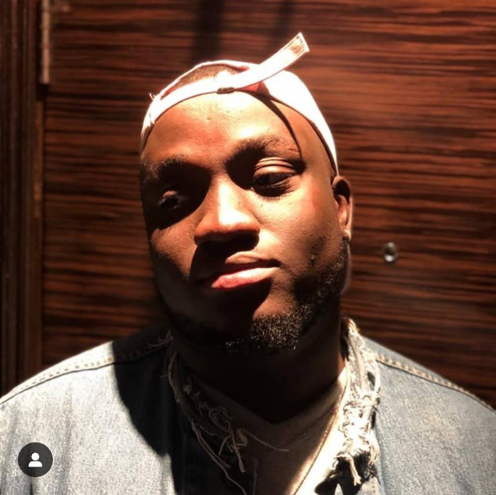

Chiemena Nwankwonta's Resume

Summary
Hi, I'm Chiemena Nwankwonta, a passionate and results-driven web developer
dedicated to creating dynamic, user-friendly, and visually appealing
websites. With a keen eye for design and a strong foundation in front-end
and back-end development, I help businesses and individuals establish a
strong online presence that drives engagement and growth.
Education
My Educational background includes:
- Kamba F international school (2000-2008)
- Internation School University of Lagos (2008-2014)
- University of Lagos (2014-2018)
- Babcock University (2018-Present)
Work Experience
My Work Experience includes:
-
Manager- Ace Music Management
(2020-2022)
-
Handled contract negotiations for the artistes under the management
-
Ensured music was produced appropriately and to the best it could be
- Handled all payments for the management and the artistes
-
Web designer- Activating Activists & ABC Kids Foundation
(2023-2024)
-
Built the websites;
activatingactivists.com
and
abckidsfoundation.com
-
Handled the back-end duties on the activatingactivists' website like
- Editing posts
- Uploading Images
- Fixing erros
-
Developed and implemented website UI/UX improvements based on user
feedback and best practices.
-
Ensured brand consistency by following company style guides and
color schemes.
-
Media Head- Ignite Teens, Global Impact Church(Volunteer)
(2024-Present)
-
Oversaw the church’s social media platforms to engage teenagers and
promote church events.
-
Managed the development of weekly content for Instagram, Facebook,
and YouTube.
-
Led and trained a team of young volunteers in media production and
social media management.
-
Designed digital and print materials for announcements, flyers, and
sermon series.
Awards and Certifications
Awards and Certifications include:
-
Most resourceful volunteer
-
Best unit head
Extra Information